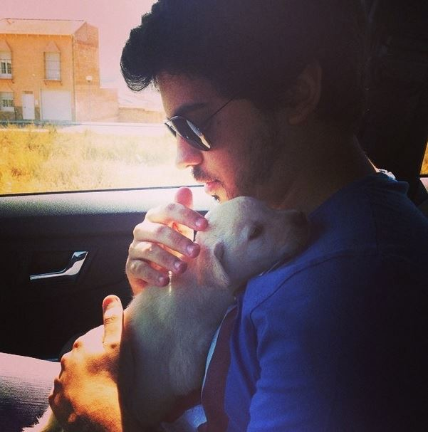

En este pequeño blog queremos abrirte al maravilloso mundo de compartir tu vida con un nuevo miembro peludo (o con plumas, escamas...) en tu familia.
Esperamos poder brindar algunos consejos o ayuda general para adoptantes primerizos, y que la transición se haga un poco menos difícil.
En este sección haremos una introducción a las mascotas más comunes en España, con pros y contras para que encuentres tu nuevo miembro de la familia ideal.
Aquí vamos a darte información sobre alguna característica menos conocida sobre cada tipo de mascota vista anteriormente. ¡Seguro que acabas sorprendid@!
En este sección te damos las bases fundamentales para una convivencia armoniosa con tu nuevo amigo y algunos consejos que te serán útiles a lo largo de este viaje juntos.
¿No sabes dónde buscar información de un veterinario cercano, una tienda de comida fiable o incluso un etólogo? Ésta es tu sección. Además, mediante un formulario podrás ponerme en contacto conmigo y podré resolver alguna de tus dudas de forma individualizada.
WORK IN PROGRESS
Desde muy pequeño he sido entusiasta de los animales. Era frecuente verme recogiendo gatos callejeros y llevándomelos a escondidas o pidiendo continuamente tener un perro. A medida que crecí, tuve varias mascotas, la mayoría de ellas llegaron a mí por casualidad, salvo Trece.
Trece es mi familia, mi acompañante. Llevamos 12 años juntos.

Otros bichitos que me han acompañado en ciertos puntos de mi vida son: